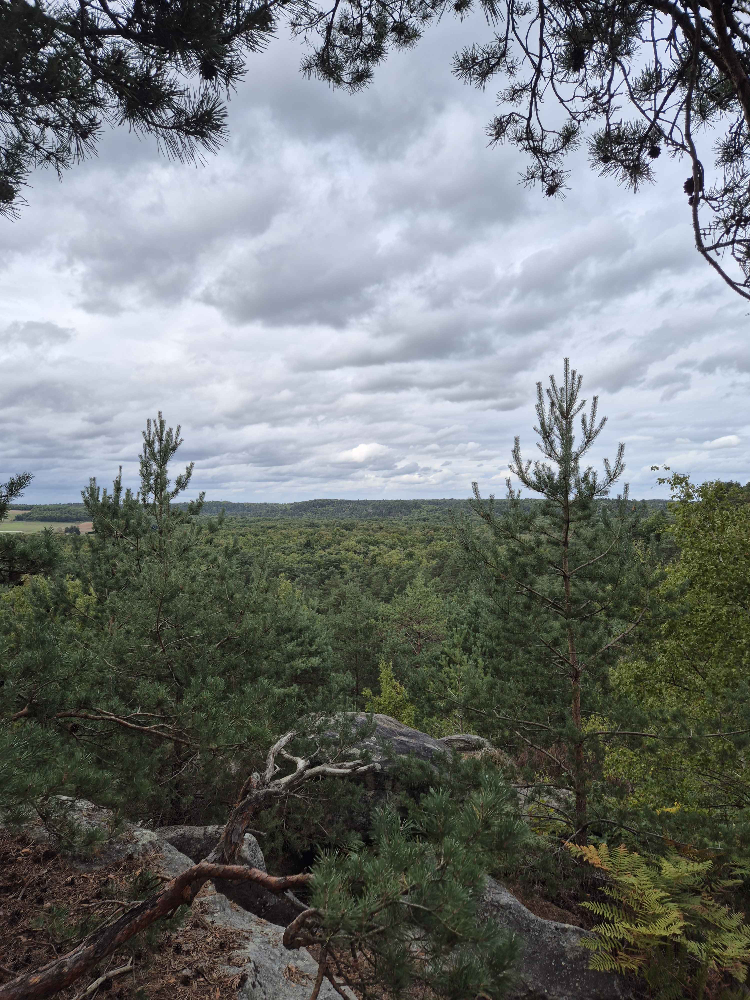

Van jongs af aan ben ik gefascineerd door video games. Dit zijn mijn drie favorieten.
In 2024 ben ik begonnen met klimmen en het heeft me meteen gegrepen. Als vakantie trek ik met mijn vrienden naar Fontainebleau in Frankrijk, een van de mooiste klimgebieden ter wereld. We kamperen er en klimmen overdag tussen de rotsblokken in het bos – de perfecte combinatie van natuur, sport en avontuur.
